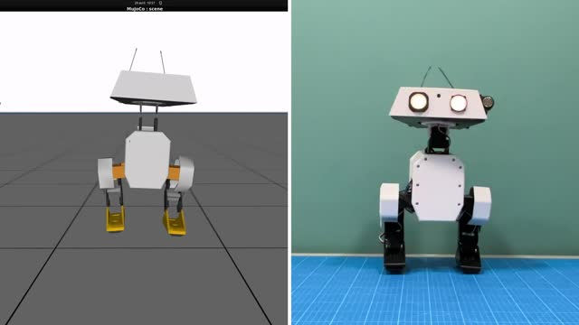

OpenDuck Mini V2: Smart Wheeled Platform

OpenDuck Mini V2 is a compact, open-source differential drive wheeled robot designed for autonomous navigation, SLAM mapping, and digital fabrication training. Engineered as a robust testbed, it coordinates low-level ESP32 motor loops with high-level ROS2 SLAM stack on a Raspberry Pi.
What's New in Mini V2
micro-ROS Control
Integrated micro-ROS agent coordinates actuator velocity directly over WiFi or serial.
LIDAR Navigation
A 360-degree LIDAR scanner sits on the top deck for real-time laser mapping.
3D Printed Chassis
Fully open-source STL files make repairing or modifying the robot simple.
Hardware & Specification
The system utilizes standard N20 encoder gearmotors, an ESP32 microcontroller for real-time motor PID speed control, and a Raspberry Pi host processor for mapping and logic.
| Component | OpenDuck Mini V2 Specs | Connection Interface |
|---|---|---|
| Low-level controller | ESP32 DevKitC v4 (Dual-Core) | USB-Serial / UART |
| High-level controller | Raspberry Pi 4 (4GB) or Raspberry Pi 5 | Host PC/WLAN |
| Motors | 2x N20 Gearmotors with Hall-effect Encoders | Dual H-Bridge Driver (TB6612FNG) |
| LIDAR Module | RPLIDAR A1M8 360-degree Scanner | USB to UART module |
| IMU Sensor | MPU6050 (6-DOF Accelerometer + Gyro) | I2C Interface |
| Power Source | 7.4V 2S Li-Po or 18650 Battery Pack | DC-DC buck converters (5V and 3.3V) |
micro-ROS Firmware Example
The following C++ code fragment runs on the ESP32 low-level microcontroller, establishing velocity subscription topics using micro-ROS to control motors:
#include
#include
#include
#include
rcl_subscription_t subscriber;
geometry_msgs__msg__Twist msg;
void subscription_callback(const void *msgin) {
const geometry_msgs__msg__Twist * twist_msg = (const geometry_msgs__msg__Twist *)msgin;
// Command motor speed
float linear_x = twist_msg->linear.x;
float angular_z = twist_msg->angular.z;
// Convert twist values to differential wheel velocities
float right_wheel_target = linear_x + angular_z;
float left_wheel_target = linear_x - angular_z;
// Drive motors (PID velocity controller updates here)
set_motor_speeds(left_wheel_target, right_wheel_target);
} SLAM & LIDAR Navigation
To run SLAM on the Raspberry Pi host, connect to the ESP32 micro-ROS agent, start the LIDAR publisher, and launch Cartographer or Nav2:
# Start micro-ROS agent on Raspberry Pi
ros2 run micro_ros_agent micro_ros_agent serial --dev /dev/ttyUSB0
# Start RPLIDAR node
ros2 launch rplidar_ros2 rplidar_launch.py
# Launch Cartographer SLAM Node
ros2 launch openduck_nav cartographer_slam.launch.py